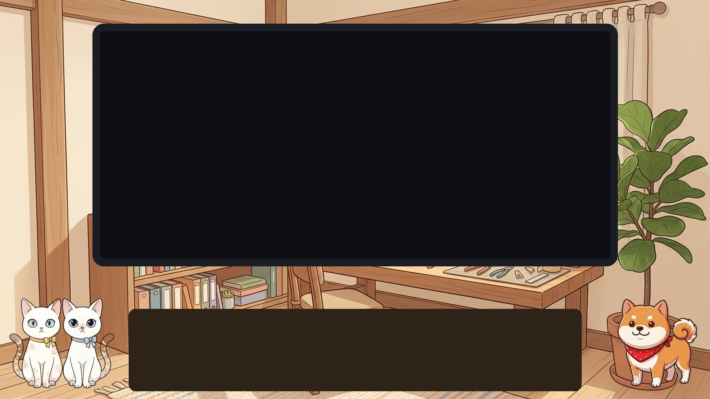
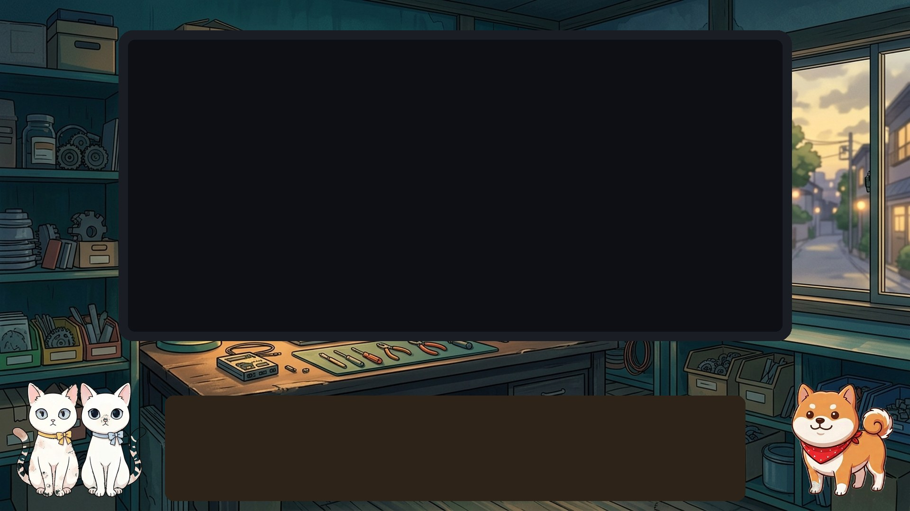
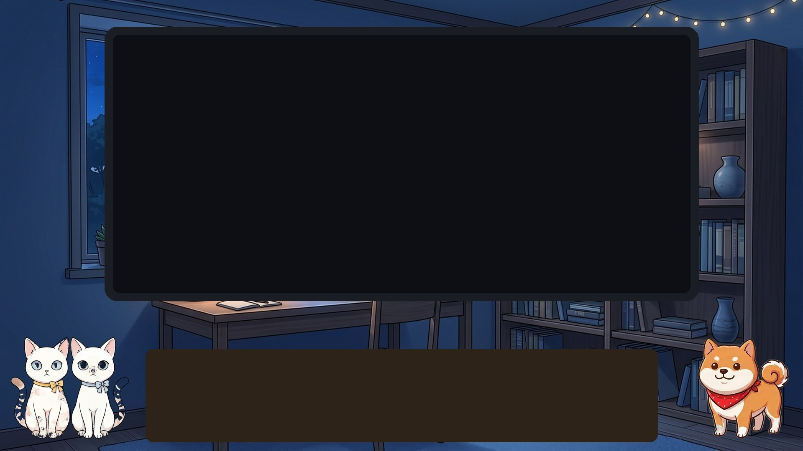
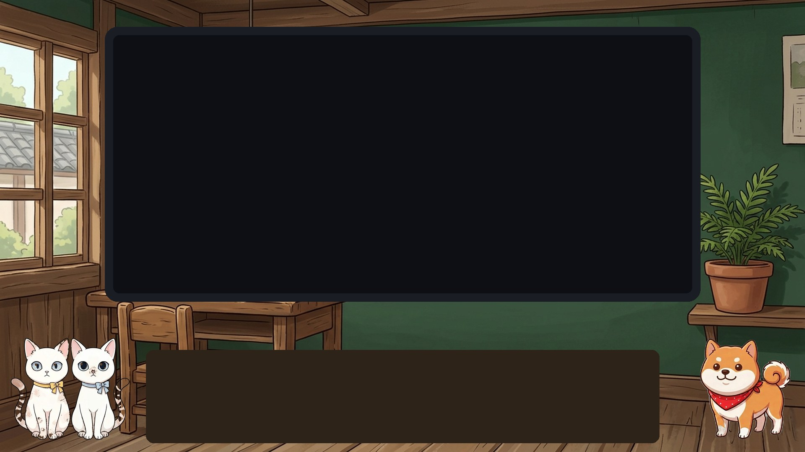

評価基準: 柴犬の茶色の毛並みが映えるか / 白猫が埋もれないか / きなこもっちー（昼の自室）との差別化

木目・ベージュがさとの毛色と同系で、キャラの抜けが弱い（比較用）

深い青緑×茶色は補色。白猫・柴犬とも抜けが良い。「修理工房」=番組テーマど真ん中

紺×オレンジでさとのコントラスト最強。夜トーンなので速報・特番向きか

緑×赤バンダナ・茶が好相性。黒板IGと「授業」世界観が揃う。資格聞き流しレーン向き